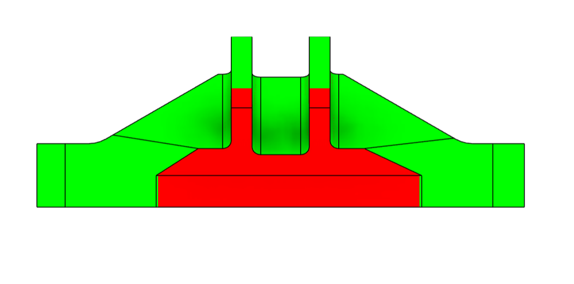
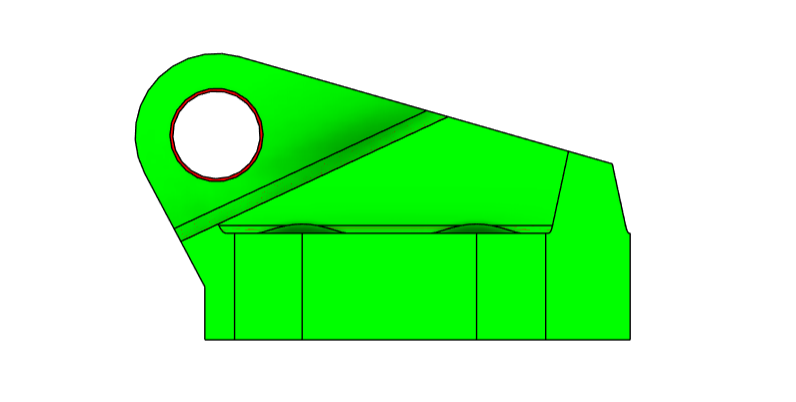
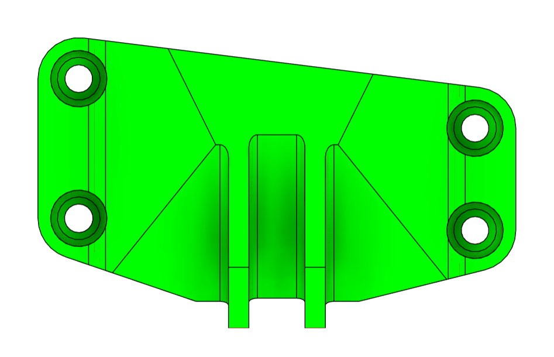

Designed to Manufacture. Validated to Perform.
Engineering for Machined Components
We do not design parts. We decide which part makes sense to manufacture.
The same function can be achieved through machining, sheet metal, welded assemblies or different material selections.
The challenge is not creating geometry. It is choosing the right solution before manufacturing.




Every decision is a trade-off.
Optimizing one variable often makes the others worse. We balance the technical and manufacturing consequences before committing to a path.

It is not about doing more engineering. It is about making better decisions.
Arroyo Systems helps develop mechanical components under load with less technical uncertainty before manufacturing.

Contact
Engineering for machined components.
Designed to Manufacture. Validated to Perform.
- contact@arroyo-systems.com
- Madrid, Spain